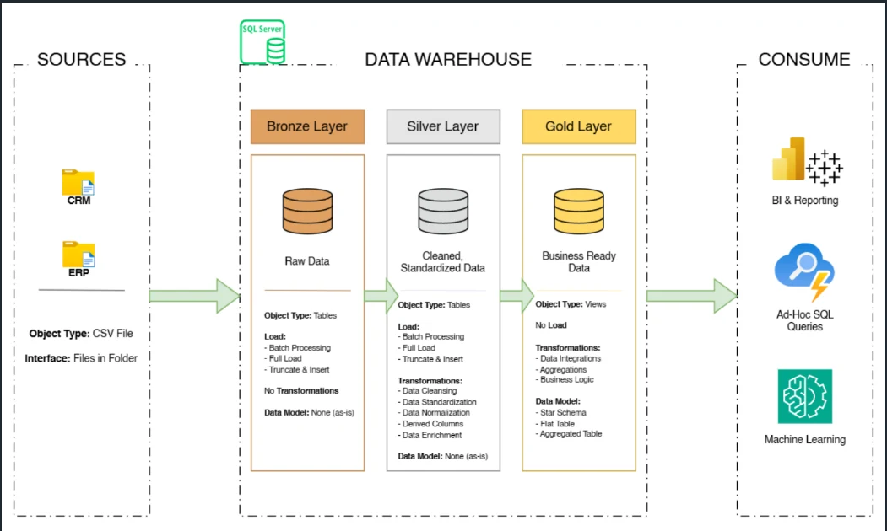

DATA ENGINEERING
Building the layer reliable analytics depends on.
This project treats analytics as a pipeline, not just a dashboard. CRM and ERP source files move through Bronze, Silver, and Gold layers in SQL Server before reaching a star-schema business layer built for accurate reporting.
THE PROBLEM
Dashboards inherit the quality of the data underneath.
- Two disconnected sources. CRM and ERP exports arrive as separate CSV files with different conventions.
- Dirty inputs. Duplicates, inconsistent codes, and missing values break reports quietly.
- No single truth. Without a shared model, every analysis re-joins and re-cleans the same data.
THE SOLUTION
A layered warehouse with a clear job for each layer.
- Bronze. Load raw files as-is (batch, full load, truncate & insert) so the source is always preserved.
- Silver. Cleanse, standardize, normalize, and enrich into consistent tables.
- Gold. Integrate and aggregate into business-ready views modeled as a star schema.
- Consume. One trusted layer serves BI reporting, ad-hoc SQL, and machine learning.
ARCHITECTURE
From source files to business-ready data.

WORKFLOW
How data moves through the warehouse.
- 01Sources
CRM and ERP data delivered as CSV files in a folder.
- 02Bronze: raw
Batch full load into tables, no transformations.
- 03Silver: clean
Cleansing, standardization, normalization, derived columns.
- 04Gold: business
Integrated views: aggregations, business logic, star schema.
- 05Consume
BI & reporting, ad-hoc SQL queries, machine learning.